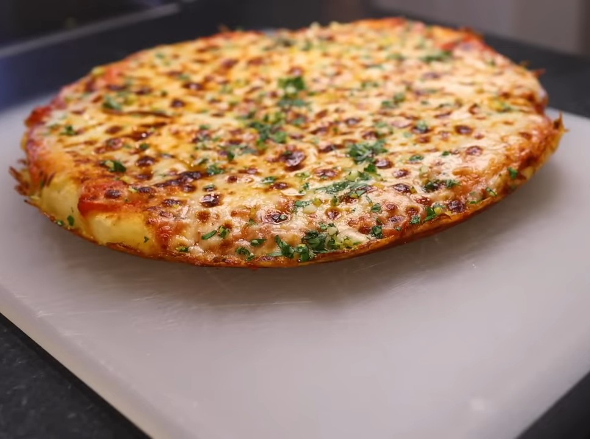

Easy Pan Pizza

Recipe by Adam Regusea
You came here for a Pan Pizza recipe, and that's what you're gonna get. No more beating around the bush, and let's get cookin!'
Dough Recipe
- 1 cup (120g) bread flour + more for kneading (all-purpose is fine instead)
- 1/2 teaspoon (3g) salt
- 1/2 teaspoon (2-3g) sugar
- 1/2 teaspoon (1-2g) dried yeast
- 1/4 teaspoon (1g) garlic powder (very optional)
- 2 teaspoons (10mL) olive oil
- 1/2 cup (120mL) milk (water is fine instead)
Sauce Recipe
- 1/3 cup (80mL) canned crushed tomatoes (I like Pastene "Kitchen Ready")
- 1 teaspoon (5g) tomato paste (I only use this when I can't get the Pastene tomatoes)
- a small pinch of sugar
- a few pinches of dried pizza herbs (oregano, basil, marjoram, chili flakes, etc)
For The Rest
- 5-6 oz (140-170g) low-moisture mozzarella (ideally not grated)
- grated parmesan
- additional olive oil and pizza herbs